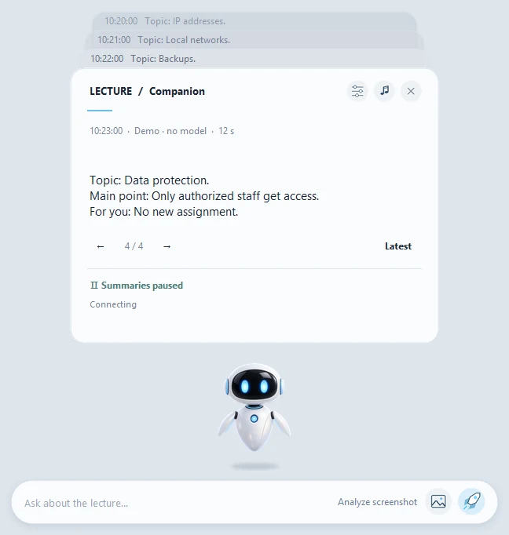

Lecture Companion
- Task
- I could not keep up with the lecturer’s words: while I recalled a German word and looked for it, I lost the sense of what was being said. The robot helps me stay in the context of the lecture and work through it, without sending anything to the internet.
- What I did
- The idea is mine, as with PeakMP3; the design was agreed with me, an AI wrote the code, and acceptance, tests and the rest were mine.
- How it was checked
- GitHub Actions runs model-free checks on Windows (verify.py); the release comes with SHA-256 checksums, and there is a demo without Teams using artificial data. The program has not yet been checked on a second clean PC.